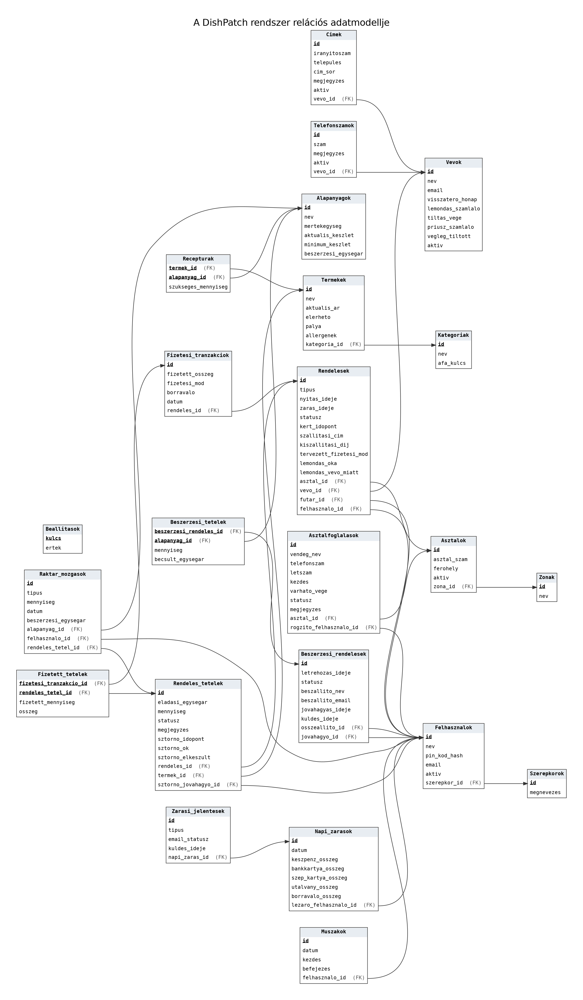

-
3.1 Adatbázis kezelő kiválasztása
A rendszer implementációja során az adatbázis-kezelési feladatokra a PostgreSQL relációs adatbázis-kezelő (RDBMS) rendszert választottuk. A döntés főbb okai:
- Teljesen nyílt forráskódú és ingyenes, így licencköltségek nélkül használható üzleti környezetben is.
- Kiválóan kezeli a párhuzamos tranzakciókat, ami egy forgalmas étteremben a párhuzamos rendelésfelvételeknél kritikus.
- Tökéletesen integrálható a backendhez választott Java Spring Boot keretrendszerrel és a Hibernate ORM-mel.
-
3.2 Szemantikai adatmodell
A rendszer logikai felépítését, a valós világbeli fogalmakat és a közöttük lévő összetett kapcsolatokat az alábbi ER diagram szemlélteti. A modell tartalmazza az N:M (több-a-többhöz) kapcsolatok feloldását, valamint a tételenkénti számlabontáshoz, az asztalfoglaláshoz, a kiszállításhoz és a vevői jelzőkhöz, a sztornók és a beszerzések jóváhagyásához, valamint a napi záráshoz szükséges adatokat.
A rendszer teljes ER modellje

Egyed (Entity) Attribútumok Leírás és Kapcsolatok Szerepkör id [PK], megnevezes A dolgozók munkakörei és jogosultsági szintjei: Pincér, Szakács, Diszpécser, Üzletvezető, Könyvelő, Futár. A Futár szerepkörű dolgozók az első verzióban nem lépnek be; a rendszergazda nem kap szerepkört. Felhasználó id [PK], nev, pin_kod_hash, email, aktiv, szerepkor_id [FK] Az étterem dolgozói. A PIN-kódot hashelve tároljuk (futárnál üres), a törlést logikai inaktiválással oldjuk meg. Az e-mail-cím a Könyvelőnél és az Üzletvezetőnél (zárási jelentések), valamint a Diszpécsernél (készletriasztások) kötelező. A Szerepkörhöz N:1 kapcsolattal kötődik. Műszak id [PK], datum, kezdes, befejezes, felhasznalo_id [FK] Az aznap dolgozó (bejelentett) munkatársak nyilvántartása, amelyet a Diszpécser rögzít. Ebből készül a zárási jelentések dolgozói listája, és ebből választható ki az aznapi futár. A Felhasználóhoz N:1 kapcsolattal kötődik. Zóna / Helyiség id [PK], nev Az étterem fizikai területeinek (Terasz, Belső tér) nyilvántartása. Asztal id [PK], asztal_szam, ferohely, aktiv, zona_id [FK] A vendégtér asztalainak nyilvántartása. N:1 kapcsolatban áll a Zónával. Az asztal állapotát (szabad, lefoglalt, foglalt, fizetésre vár) nem tároljuk: a rendszer a nyitott rendelésből és az aktuális foglalásokból számítja. Asztalfoglalás id [PK], vendeg_nev, telefonszam, letszam, kezdes, varhato_vege, statusz, megjegyzes, asztal_id [FK], rogzito_felhasznalo_id [FK] A vendégek előzetes asztalfoglalásai. Állapota: Aktív, Megérkezett, Lemondva, Nem jelent meg. Egy asztalhoz és a foglalást rögzítő felhasználóhoz N:1 kapcsolattal kötődik. Vevő id [PK], nev, email, visszatero_honap, lemondas_szamlalo, tiltas_vege, priusz_szamlalo, vegleg_tiltott, aktiv A kiszállításos rendelést leadó vevők. A visszatero_honap azt a hónapot jelöli, amelyben a vevő visszatérő (havonta számítva). A lemondas_szamlalo a vevőnek felróható lemondásokat számolja: a küszöb elérésekor a tiltas_vege egy hónappal későbbi dátumot kap (tiltott). Lejáratkor a priusz_szamlalo eggyel nő (priuszos), és a lemondas_szamlalo nullázódik; a harmadik lejáratkor a vegleg_tiltott igazra vált. A telefonszámok a Telefonszám egyedben vannak; a jelzők a vevőhöz tartoznak, így bármelyik számáról hív, ugyanaz a tiltás érvényes. A szabályok részletesen: SRS 3.2. Telefonszám id [PK], szam (egyedi), megjegyzes, aktiv, vevo_id [FK] A vevők telefonszámai; egy vevőnek több száma is lehet (Vevő 1:N Telefonszám), egy szám viszont csak egy vevőhöz tartozhat. A megjegyzés pl. „munkahelyi”. A Diszpécser a vevőt név, bármelyik telefonszám (részlet is) vagy cím alapján keresheti. Cím id [PK], iranyitoszam, telepules, cim_sor, megjegyzes, aktiv, vevo_id [FK] A vevők szállítási címei; egy vevőnek több címe is lehet (Vevő 1:N Cím). A megjegyzés pl. a kapucsengőre vagy az emeletre vonatkozik. Kategória id [PK], nev, afa_kulcs A termékek csoportosítása és a hozzájuk tartozó adókulcs. Termék id [PK], nev, aktualis_ar, elerheto, palya, allergenek, kategoria_id [FK] Az étlapon és itallapon szereplő késztermékek. Csak a jelenleg érvényes árat tartalmazza. A pálya (Hidegkonyha, Melegkonyha, Pult) határozza meg, melyik konyhai kijelzőn jelenik meg. Alapanyag id [PK], nev, mertekegyseg, aktualis_keszlet, minimum_keszlet, beszerzesi_egysegar A raktárkészlet elemei. A beszerzési egységár egy mértékegységnyi alapanyag aktuális ára, ebből és a receptúrából számítható a termékek árrése. A minimumkészlet alá csökkenéskor a rendszer felugró ablakban és e-mailben figyelmezteti a diszpécsert és az üzletvezetőt. Receptúra termek_id [PK, FK], alapanyag_id [PK, FK], szukseges_mennyiseg Kapcsoló egyed a Termék és az Alapanyag közötti N:M kapcsolathoz. Definiálja, hogy egy ételhez miből mennyi alapanyag kell. Raktár_mozgás id [PK], tipus, mennyiseg, datum, beszerzesi_egysegar, alapanyag_id [FK], felhasznalo_id [FK], rendeles_tetel_id [FK, opcionális] A készletváltozások historikus naplózása (Bevételezés, Selejt, Fogyás, Sztornó-visszaírás). Bevételezésnél rögzül az akkori beszerzési egységár, ebből készül a zárási jelentések alapanyag-bevételezési része. Fogyásnál és sztornónál a kiváltó rendelési tételhez is kötődik. Sztornó-visszaírás csak akkor keletkezik, ha a sztornózott tétel még nem készült el. Beszerzési_rendelés id [PK], letrehozas_ideje, statusz, beszallito_nev, beszallito_email, jovahagyas_ideje, kuldes_ideje, osszeallito_id [FK], jovahagyo_id [FK] A beszállítónak szóló rendelési előrejelzés. A Diszpécser állítja össze a készletriasztás javasolt mennyiségei alapján, az Üzletvezető jóváhagyja vagy elutasítja, jóváhagyás után a rendszer e-mailben elküldi. Állapota: Tervezet, Jóváhagyásra vár, Jóváhagyva, Elutasítva, Elküldve. Beszerzési_tétel beszerzesi_rendeles_id [PK, FK], alapanyag_id [PK, FK], mennyiseg, becsult_egysegar Kapcsoló egyed a Beszerzési_rendelés és az Alapanyag közötti N:M kapcsolathoz. Rendelés id [PK], tipus, nyitas_ideje, zaras_ideje, statusz, kert_idopont, szallitasi_cim, kiszallitasi_dij, tervezett_fizetesi_mod, lemondas_oka, lemondas_vevo_miatt, asztal_id [FK], vevo_id [FK], futar_id [FK], felhasznalo_id [FK] Egy fogyasztás vagy kiszállítás fejlécadatai. Típusa: Helyben vagy Kiszállítás. Helyben fogyasztásnál az asztal_id kötelező, állapota: Nyitott, Fizetésre vár, Lezárt. Kiszállításnál a vevo_id és a szallitasi_cim (a cím rendeléskori másolata) kötelező, állapota: Felvéve, Kész, Úton, Kiszállítva, Lemondva. Ezeket a Diszpécser állítja; a Kiszállítva a futár visszaérkezésekor kerül beállításra. A felvevő dolgozóhoz, a futárhoz, az asztalhoz és a vevőhöz N:1 kapcsolattal kötődik. Rendelés_tétel id [PK], eladasi_egysegar, mennyiseg, statusz, megjegyzes, rendeles_id [FK], termek_id [FK], sztorno_idopont, sztorno_ok, sztorno_elkeszult, sztorno_jovahagyo_id [FK] Kapcsoló egyed: a rendelés konkrét elemei. Az eladasi_egysegar rögzítése kritikus az ártörténet miatt. Állapota: Konyhán, Kész, Felszolgálva, Sztornózva. Konyhára küldött tétel sztornójához a diszpécser PIN-kódos jóváhagyása szükséges és elegendő; a jóváhagyó, az időpont és az indok a tételnél rögzül. Sztornókor a rendszer rákérdez, elkészült-e a tétel (sztorno_elkeszult): ha nem, Sztornó-visszaírás raktármozgás jön létre; ha igen, a készlet nem változik, a tétel selejtnek számít. Kiszállítás lemondásakor a rendelés minden tétele ugyanígy sztornózódik. Tétel áthelyezésekor vagy asztalok összevonásakor a tétel rendeles_id-ja módosul. Fizetési_tranzakció id [PK], fizetett_osszeg, fizetesi_mod, borravalo, datum, rendeles_id [FK] A számlakiegyenlítések rögzítése. Egy tranzakció egy fizetési módhoz tartozik, így a vegyes fizetés több tranzakcióként jelenik meg. Kiszállításnál a Diszpécser rögzíti a futár visszaérkezésekor. A Rendeléssel N:1 kapcsolatban áll. Fizetett_tétel fizetesi_tranzakcio_id [PK, FK], rendeles_tetel_id [PK, FK], fizetett_mennyiseg, osszeg Kapcsoló egyed a tételenkénti asztalbontáshoz (Fizetési_tranzakció és Rendelés_tétel között, N:M). A fizetett mennyiség tört is lehet (pl. 0,5 egy tétel felezésekor). Egy tételre jutó fizetett mennyiségek összege nem haladhatja meg a tétel mennyiségét. Napi_zárás id [PK], datum, keszpenz_osszeg, bankkartya_osszeg, szep_kartya_osszeg, utalvany_osszeg, borravalo_osszeg, lezaro_felhasznalo_id [FK] A napi zárás összesítője, amelyet a Diszpécser indít, miután nincs nyitott asztal és "Úton" lévő kiszállítás. A zárás után a rendszer két Zárási_jelentést állít elő és küld el. Zárási_jelentés id [PK], tipus, email_statusz, kuldes_ideje, napi_zaras_id [FK] A napi zárás e-mail-jelentései. A Könyvelői jelentés a napi bevételt tartalmazza tételesen és fizetési módonként (készpénz, bankkártya, SZÉP-kártya, utalvány), az aznapi alapanyag-bevételezéseket (mennyiség, beszerzési érték) és az aznap dolgozó munkatársakat (Műszak); a Könyvelő szerepkörű felhasználók kapják. Az Üzletvezetői jelentés ugyanezeket tartalmazza, kiegészítve az aznapi sztornókkal (tétel, indok, jóváhagyó, elkészült-e, vagyis selejt-e) és a lemondott kiszállításokkal; az Üzletvezető kapja. Internetkimaradáskor a jelentés a szerver lemezén sorban áll (email_statusz: Sorban áll / Elküldve). A Napi_záráshoz N:1 kapcsolattal kötődik. Beállítás kulcs [PK], ertek Az Üzletvezető által módosítható rendszerbeállítások, pl. visszatérő küszöb (10 rendelés), tiltási lemondásküszöb (3), tiltás időtartama (1 hónap), végleges tiltás küszöbe (3 tiltás), kiszállítási díj. -
3.3 Relációs adatmodell
A rendszer relációs adatmodellje

-
3.4. Az adatbázis kezelővel kapcsolatot tartó osztályok
A DishPatch rendszer adatbázis-rétegének megvalósítása során a klasszikus, nyers SQL alapú megközelítés helyett objektum-relációs leképzést alkalmazunk. A Java alapú backend és a PostgreSQL adatbázis közötti kommunikációt a Spring Data JPA és a Hibernate keretrendszerek biztosítják. Ennek az architektúrának a legfőbb előnye, hogy feloldja az objektumorientált programozás és a relációs adatbázisok közötti strukturális különbségeket , így a fejlesztés során a tiszta üzleti logikára koncentrálhatunk az adatbázis-specifikus parancsok ismételgetése helyett.
A kommunikáció alapját az Entity osztályok adják. A relációs sémánk minden egyes táblájának (pl. Termekek, Rendelesek, Felhasznalok) pontosan megfelel egy annotációkkal (pl.
@Entity,@Table) ellátott Java osztály. Ezek az entitások felelnek azért, hogy az adatbázisban lévő fizikai sorokat a program futása közben a memóriában lévő objektumokként lehessen kezelni. A táblák közötti kapcsolatokat (idegen kulcsok, N:M kapcsolatok) szintén objektumszinten, referenciákkal képezzük le. Így például egy asztal vagy egy rendelés lekérdezésekor a hozzá tartozó tételek automatikusan, egy Java lista vagy kollekció formájában állnak rendelkezésre, anélkül, hogy manuális JOIN műveleteket kellene írnunk.Az adatbázis-műveletek végrehajtásáért a Repository interfészek felelnek, amelyek elrejtik a perzisztencia réteg komplexitását. Ahelyett, hogy minden entitáshoz külön megírnánk a beszúró, módosító, törlő és lekérdező rutinokat, a Spring keretrendszer beépített
JpaRepositoryfelületét terjesztjük ki. A specifikusabb üzleti igényeket például egy adott dolgozóhoz tartozó készletmozgások listázását, vagy az aktív asztalok szűrését a Spring Data beépített névfeloldó mechanizmusa kezeli. Elegendő a metódus nevét a megfelelő kulcsszavakkal felépíteni (pl.findByAsztalIdAndStatusz), és a keretrendszer a háttérben automatikusan legenerálja hozzá az optimalizált lekérdezést.Végül, ez az adatelérési réteg felel a tranzakciókezelésért és a biztonságért is. Emellett a Hibernate automatikusan paraméterezett lekérdezéseket használ, ami rendszerszinten zárja ki az SQL-injekciós támadások lehetőségét, biztonságossá téve az egész backend működését.